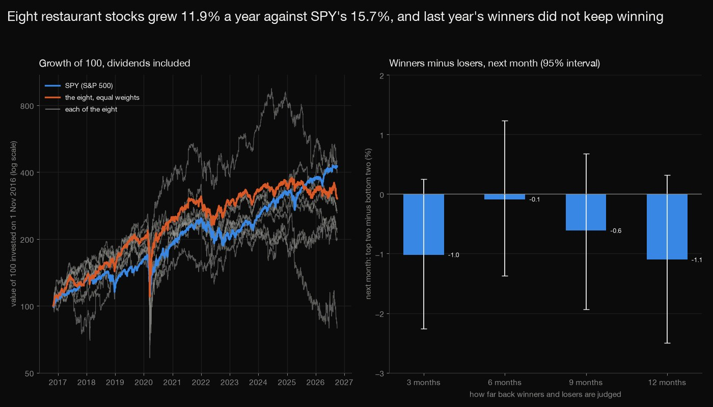
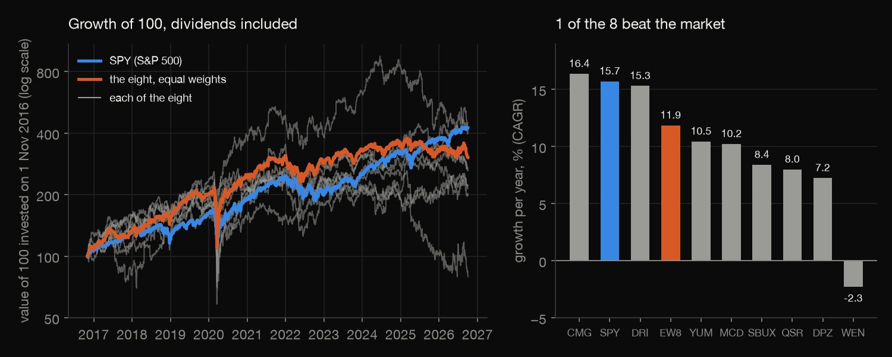
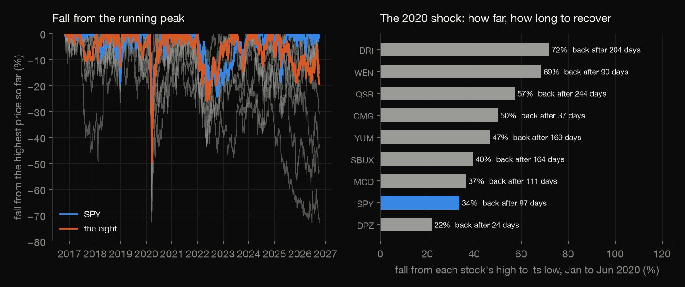
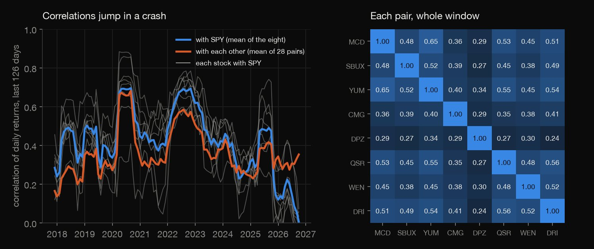
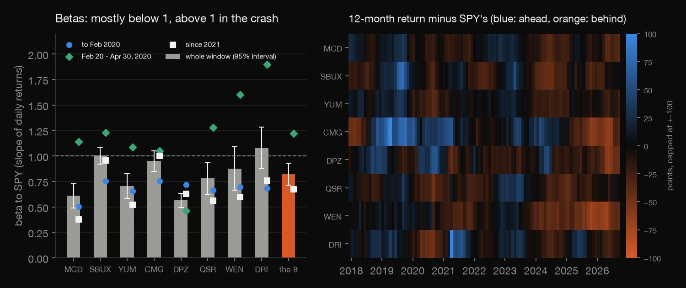
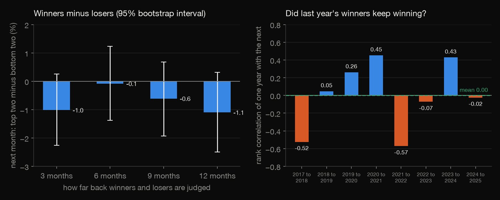

Python · Market analytics · 2026-10
Do fast-food stocks beat the market?
Eight restaurant stocks grew 11.9% a year against SPY's 15.7% (only CMG beat it), fell 37% to 73% at worst, and became strongly correlated in the 2020 crash; last year's winners did not keep winning (bootstrap intervals include zero). Not advice.

Historical description, not investment advice. Eight hand-picked, still-listed stocks (survivors; Darden is casual dining), so tiny N and likely flattered returns; momentum tests with eight stocks are weak. The window starts on 1 Nov 2016 because the Yum China spin-off made YUM fall 29.7% in one day, which price adjustment does not remove. Prices: Alpaca Markets consolidated daily bars, adjusted; Alpaca's terms forbid redistribution, so only our statistics are published.
01 — The problem
Restaurant stocks are a popular sector to chart. Did eight fast-food and restaurant stocks beat the market, how did they behave in the 2020 shock, and did the stocks that did best keep doing best?
The task follows DataCamp's "Exploring Stock Market Trends with Plotly" (fast-food stock prices and sector momentum), with static matplotlib charts instead of Plotly. The data is daily adjusted prices of McDonald's, Starbucks, Yum!, Chipotle, Domino's, Restaurant Brands, Wendy's and Darden against the S&P 500 fund. A historical description, not advice.
02 — What I built
Eight stocks against SPY, 2,492 daily returns, looked at five ways:
- Performance: growth of 100, annual growth, volatility, and the eight combined as one index.
- Drawdowns: worst falls, recovery times, and the 2020 shock stock by stock.
- Correlation and beta: with SPY and with each other, rolling, and in the crash.
- Momentum: rank the eight on 3 to 12 months of past return and test the next month, plus year-to-year rank persistence, with bootstrap intervals.
- Check:
check.pyrecounts 2,669 numbers in plain Python, with no data or statistics library.
03 — How it was built
- 01
Download the prices without redistributing them
Daily bars from the Alpaca Markets API with a free paper-trading account (keys read from a local file, never printed), split- and dividend-adjusted, consolidated feed (the free IEX feed starts in 2020 and misses the crash). Alpaca's terms forbid redistribution: the 1.2 MB file stays local, cut from the sibling project's download, and only our statistics are published.
rows = [r for r in csv.reader(open(src)) if r[0] in TICKERS]; origin = f"cut from {Path(src).name} of the stock-time-series project (same API call, feed=sip, adjustment=all)" - 02
Find the spin-off, and start after it
On 1 November 2016 YUM fell 29.7% in a day while no other stock moved more than 1.3%: Yum! Brands had just spun off Yum China. Price adjustment covers splits and dividends, not spin-offs, so the fall is not a loss to the holder; the window starts at that day's close.
px = b.pivot(index="date", columns="symbol", values="close")[STOCKS + ["SPY"]]; px = px.loc[START:] - 03
Measure drawdowns and the crash
A drawdown is the fall from the highest price so far; the worst one has a peak, a trough and, if the old peak is regained, a recovery date. For 2020, each stock is measured from its own high (Domino's jumped on results the day after the market's high) to its lowest close by June.
if v / p[pk] - 1 < best[0]: best = (v / p[pk] - 1, pk, i) - 04
Test momentum with eight stocks, honestly
At each month-end the stocks are ranked on their past return; the top two minus the bottom two, next month, is the spread. The months are resampled 10,000 times with a fixed seed to put an interval round the mean. The months are the noise it can measure; whether eight hand-picked stocks are representative, it cannot.
idx = [int(rng.random() * n) for _ in range(n)] - 05
Recount it all without the libraries
check.pyrecomputes the returns, performance, drawdown and recovery dates, the 2020 table, every correlation, beta and robust standard error, the rolling statistics, the momentum spreads and rank correlations, and both bootstraps (the same seeds and random stream): 2,669 numbers to a relative tolerance of 1e-8.for _ in range(B):
04 — Results
They did not beat the market. 100 invested on 1 November 2016 became 425 in SPY (CAGR 15.7%) and 304 in the eight combined (11.9%); only CMG (16.4%) grew faster than SPY. The eight were also more volatile (21.3% a year combined against 17.7%). The table gives each stock's growth per year, its annualised volatility and its worst fall from a peak.
| Stock | Year | Vol. | Worst fall |
|---|---|---|---|
| CMG | +16.4% | 36% | -59% |
| DRI | +15.3% | 36% | -73% |
| YUM | +10.5% | 23% | -52% |
| MCD | +10.2% | 21% | -37% |
| SBUX | +8.4% | 30% | -44% |
| QSR | +8.0% | 28% | -63% |
| DPZ | +7.2% | 30% | -48% |
| WEN | -2.3% | 40% | -73% |
| The eight | +11.9% | 21% | -50% |
| SPY | +15.7% | 18% | -34% |

Deep, long drawdowns, and the 2020 shock. SPY's worst fall was 33.8%, regained after 173 calendar days; single stocks fell 37% (MCD) to 73% (WEN). On 2 October 2026, SBUX, CMG, DPZ and WEN were still below the peak of their worst drawdown (WEN 73% and CMG 53% below their highs). In the 2020 shock, from each stock's own high to its low, the falls ranged from 22% (DPZ) to 72% (DRI), and getting back took 24 trading days (DPZ) to 244 (QSR).
| Stock | Fall | Days down | Days back |
|---|---|---|---|
| DRI | -72% | 24 | 204 |
| WEN | -69% | 18 | 90 |
| QSR | -57% | 22 | 244 |
| CMG | -50% | 20 | 37 |
| YUM | -47% | 32 | 169 |
| SBUX | -40% | 38 | 164 |
| MCD | -37% | 27 | 111 |
| SPY | -34% | 23 | 97 |
| DPZ | -22% | 19 | 24 |

Correlations jump in a crash. Each stock's correlation with SPY is 0.33 (DPZ) to 0.60 (SBUX), and 0.68 for the eight combined. The mean correlation between pairs was 0.26 before the shock, 0.69 from 20 February to 30 April 2020 and 0.37 since 2021. In September 2026 the 126-day correlation with SPY, averaged over the eight, was 0.01 (peak 0.70, August 2020): the stocks were moving almost independently of the index.

Betas mostly below 1, above it in the crash. The eight combined have a beta of 0.82 to SPY (standard error 0.05), single stocks 0.56 (DPZ) to 1.08 (DRI); in the shock they rose to 0.46 to 1.90 (1.22 combined). The eight combined had a better trailing 12-month return than SPY at 41% of the 107 month-ends; by stock, from 27% (QSR) to 60% (CMG).

Winners did not keep winning. At each month-end, buy the two stocks with the best past return and short the two with the worst, and look at the next month (106 to 115 months of results per look-back): the average spread is negative for every look-back, and every 95% bootstrap interval (10,000 resamples of the months, fixed seed) includes zero. Year to year, the mean rank correlation of one year's returns with the next's was +0.00 (95% interval -0.26 to +0.25, 8 pairs); 6 of 16 of each year's two best stayed in the top half (8 by chance). With eight stocks this is a weak test: it fails to find momentum, which is not proof that none exists.
| Look-back | Spread | 95% interval |
|---|---|---|
| 3 months | -1.0% | -2.3 to +0.3 |
| 6 months | -0.1% | -1.4 to +1.2 |
| 9 months | -0.6% | -1.9 to +0.7 |
| 12 months | -1.1% | -2.5 to +0.3 |

05 — What I'd do next
- Repeat the momentum test on a wide universe of listed restaurants, or all large US stocks, where ranking is meaningful, and skip the latest month.
- Add the market's own momentum: does the sector's relative strength against SPY predict the sector's next year?
- Replace the hand-picked list by the restaurant stocks listed in 2016, including those since delisted, to see how much survivorship flatters the sector.